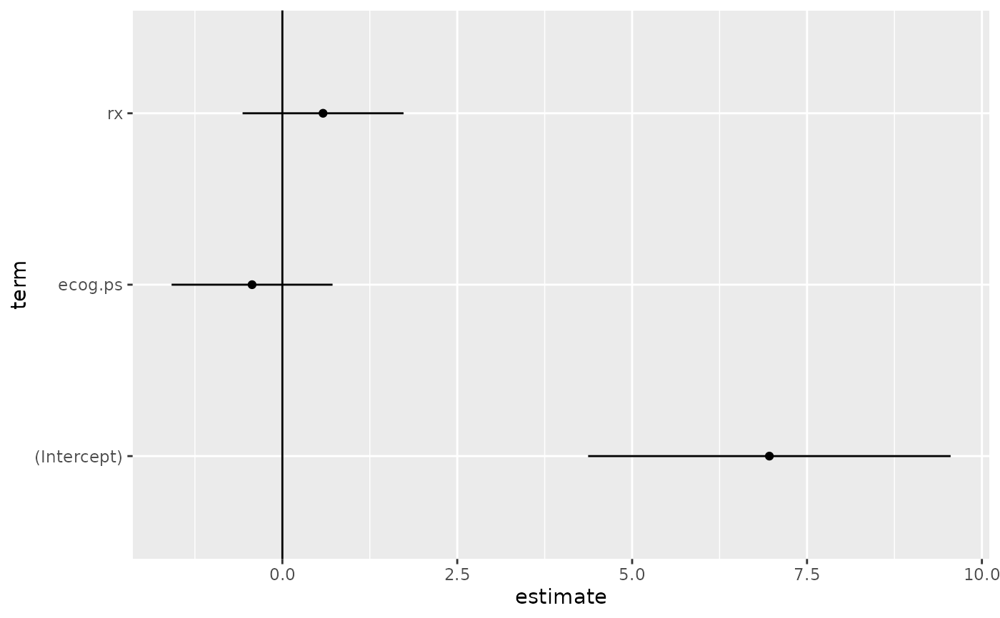

Augment data with information from a(n) survreg object
Source:R/survival-survreg-tidiers.R
augment.survreg.RdAugment accepts a model object and a dataset and adds
information about each observation in the dataset. Most commonly, this
includes predicted values in the .fitted column, residuals in the
.resid column, and standard errors for the fitted values in a .se.fit
column. New columns always begin with a . prefix to avoid overwriting
columns in the original dataset.
Users may pass data to augment via either the data argument or the
newdata argument. If the user passes data to the data argument,
it must be exactly the data that was used to fit the model
object. Pass datasets to newdata to augment data that was not used
during model fitting. This still requires that at least all predictor
variable columns used to fit the model are present. If the original outcome
variable used to fit the model is not included in newdata, then no
.resid column will be included in the output.
Augment will often behave differently depending on whether data or
newdata is given. This is because there is often information
associated with training observations (such as influences or related)
measures that is not meaningfully defined for new observations.
For convenience, many augment methods provide default data arguments,
so that augment(fit) will return the augmented training data. In these
cases, augment tries to reconstruct the original data based on the model
object with varying degrees of success.
The augmented dataset is always returned as a tibble::tibble with the
same number of rows as the passed dataset. This means that the
passed data must be coercible to a tibble. At this time, tibbles do not
support matrix-columns. This means you should not specify a matrix
of covariates in a model formula during the original model fitting
process, and that splines::ns(), stats::poly() and
survival::Surv() objects are not supported in input data. If you
encounter errors, try explicitly passing a tibble, or fitting the original
model on data in a tibble.
We are in the process of defining behaviors for models fit with various
na.action arguments, but make no guarantees about behavior when data is
missing at this time.
Usage
# S3 method for survreg
augment(
x,
data = NULL,
newdata = NULL,
type.predict = "response",
type.residuals = "response",
...
)Arguments
- x
An
survregobject returned fromsurvival::survreg().- data
A base::data.frame or
tibble::tibble()containing the original data that was used to produce the objectx. Defaults tostats::model.frame(x)so thataugment(my_fit)returns the augmented original data. Do not pass new data to thedataargument. Augment will report information such as influence and cooks distance for data passed to thedataargument. These measures are only defined for the original training data.- newdata
A
base::data.frame()ortibble::tibble()containing all the original predictors used to createx. Defaults toNULL, indicating that nothing has been passed tonewdata. Ifnewdatais specified, thedataargument will be ignored.- type.predict
Character indicating type of prediction to use. Passed to the
typeargument of thestats::predict()generic. Allowed arguments vary with model class, so be sure to read thepredict.my_classdocumentation.- type.residuals
Character indicating type of residuals to use. Passed to the
typeargument ofstats::residuals()generic. Allowed arguments vary with model class, so be sure to read theresiduals.my_classdocumentation.- ...
Additional arguments. Not used. Needed to match generic signature only. Cautionary note: Misspelled arguments will be absorbed in
..., where they will be ignored. If the misspelled argument has a default value, the default value will be used. For example, if you passconf.lvel = 0.9, all computation will proceed usingconf.level = 0.95. Two exceptions here are:
See also
augment(), survival::survreg()
Other survreg tidiers:
glance.survreg(),
tidy.survreg()
Other survival tidiers:
augment.coxph(),
glance.aareg(),
glance.cch(),
glance.coxph(),
glance.pyears(),
glance.survdiff(),
glance.survexp(),
glance.survfit(),
glance.survreg(),
tidy.aareg(),
tidy.cch(),
tidy.coxph(),
tidy.pyears(),
tidy.survdiff(),
tidy.survexp(),
tidy.survfit(),
tidy.survreg()
Value
A tibble::tibble() with columns:
- .fitted
Fitted or predicted value.
- .resid
The difference between observed and fitted values.
- .se.fit
Standard errors of fitted values.
Examples
# load libraries for models and data
library(survival)
# fit model
sr <- survreg(
Surv(futime, fustat) ~ ecog.ps + rx,
ovarian,
dist = "exponential"
)
# summarize model fit with tidiers + visualization
tidy(sr)
#> # A tibble: 3 × 5
#> term estimate std.error statistic p.value
#> <chr> <dbl> <dbl> <dbl> <dbl>
#> 1 (Intercept) 6.96 1.32 5.27 0.000000139
#> 2 ecog.ps -0.433 0.587 -0.738 0.461
#> 3 rx 0.582 0.587 0.991 0.322
augment(sr, ovarian)
#> # A tibble: 26 × 9
#> futime fustat age resid.ds rx ecog.ps .fitted .se.fit .resid
#> <dbl> <dbl> <dbl> <dbl> <dbl> <dbl> <dbl> <dbl> <dbl>
#> 1 59 1 72.3 2 1 1 1224. 639. -1165.
#> 2 115 1 74.5 2 1 1 1224. 639. -1109.
#> 3 156 1 66.5 2 1 2 794. 350. -638.
#> 4 421 0 53.4 2 2 1 2190. 1202. -1769.
#> 5 431 1 50.3 2 1 1 1224. 639. -793.
#> 6 448 0 56.4 1 1 2 794. 350. -346.
#> 7 464 1 56.9 2 2 2 1420. 741. -956.
#> 8 475 1 59.9 2 2 2 1420. 741. -945.
#> 9 477 0 64.2 2 1 1 1224. 639. -747.
#> 10 563 1 55.2 1 2 2 1420. 741. -857.
#> # … with 16 more rows
glance(sr)
#> # A tibble: 1 × 9
#> iter df statistic logLik AIC BIC df.residual nobs p.value
#> <int> <int> <dbl> <dbl> <dbl> <dbl> <int> <int> <dbl>
#> 1 4 3 1.67 -97.2 200. 204. 23 26 0.434
# coefficient plot
td <- tidy(sr, conf.int = TRUE)
library(ggplot2)
ggplot(td, aes(estimate, term)) +
geom_point() +
geom_errorbarh(aes(xmin = conf.low, xmax = conf.high), height = 0) +
geom_vline(xintercept = 0)
